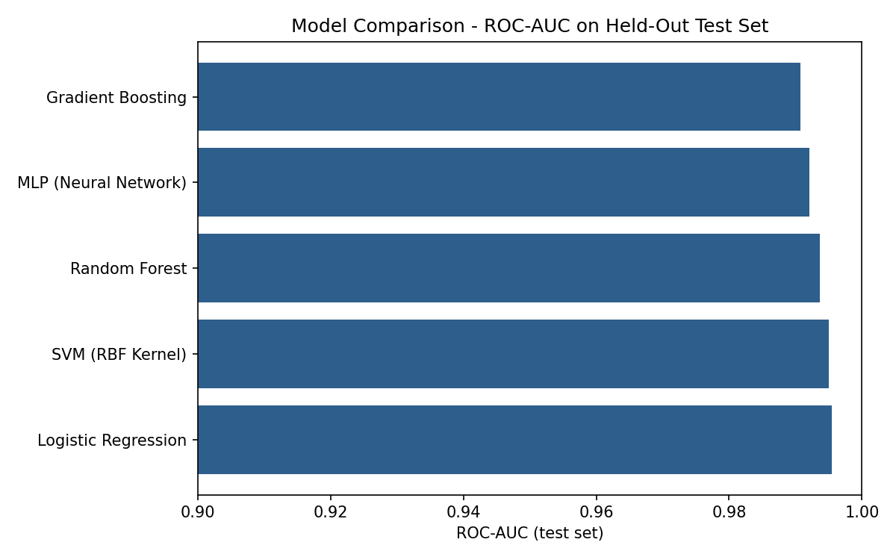
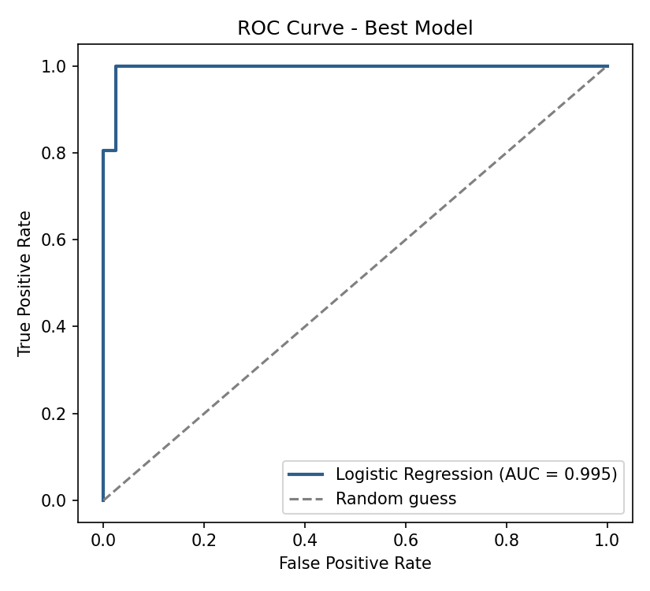
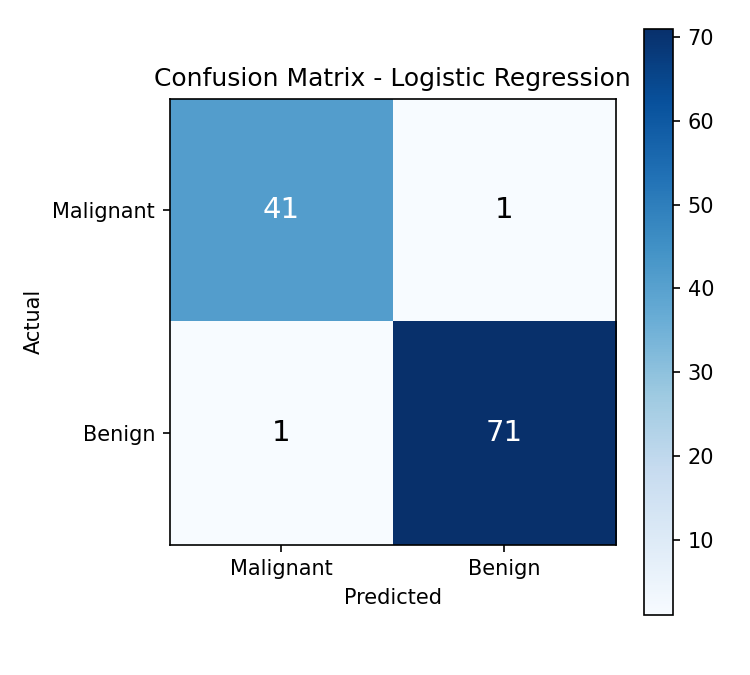
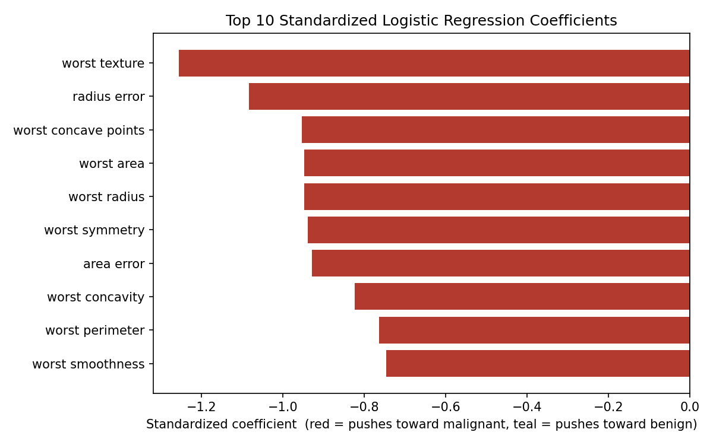

Decision support from digitized FNA cell-nuclei measurements
Enter values from the FNA image analysis, or load a reference sample to see how the model responds.
114 samples (20% of the dataset), never seen during training or model selection.
| Metric | Value | Metric | Value |
|---|---|---|---|
| Accuracy | 98.25% | Recall (benign) | 98.61% |
| Precision | 98.61% | Recall (malignant) | 97.62% |
| F1 Score | 0.986 | 5-fold CV ROC-AUC | 0.9957 ± 0.0048 |
| ROC-AUC | 0.9954 | Train / test split | 455 / 114 |

Five model families were trained and compared on identical splits; Logistic Regression and SVM were statistically tied for best ROC-AUC, with Logistic Regression chosen for its interpretability and near-instant inference time.

Area under the curve of 0.995 indicates strong separation between malignant and benign classes across all decision thresholds.

2 malignant cases were misclassified as benign out of 42 (recall 97.6%); 1 benign case was misclassified as malignant out of 72.

Worst-case texture, radius error, and worst concave points carry the strongest weight toward a malignant prediction.